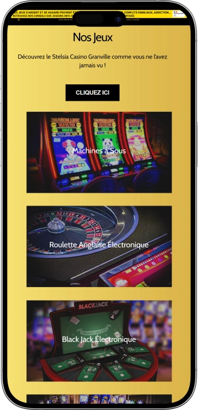

Offre de bienvenue exclusive de
Offre de bienvenue exclusive de
Casino de Granville — jeux, bars, restaurants et club face à la mer
Top casinos
Détails du bonus
Casino
Bonus
Note
Tours gratuits
Plus d'infos
Obtenir
Avantages
- Le Casino de Granville séduit par l’équilibre entre sensations de jeu et détente face à la mer.
-
Jackpots machines à sous, gros gains possibles
-
€Stars cumulés, avantages à échanger facilement
-
Roulette et blackjack: rythme, gains rapides
-
Large choix de machines, nouveautés régulières
-
Vue mer, ambiance balnéaire très vivante
-
Bars et club, soirées jusqu’au bout
-
Ouverture dès 10h, tous les jours
- Les avantages cumulés via les €Stars et la variété des mises conviennent autant aux débutants qu’aux habitués. L’ambiance de bord de mer et les horaires pratiques en font une adresse simple à intégrer à une soirée ou à un séjour.
Casino de Granville App


À propos Casino de Granville
Le casino se distingue par une expérience “jeu + nuit”: bar en salle et ambiance club prolongent la soirée au-delà des mises. La vue sur la mer et l’esprit balnéaire ajoutent une dimension de détente que l’on ne retrouve pas partout.
- Blackjack — paiement 3:2.
- Roulette — 35:1 sur numéro.
- S Club — 1 coupe offerte.
Le Casino de Granville est un lieu où le jeu se mêle à la détente face à la mer. L’ambiance intérieure est vivante et chaleureuse, adaptée autant à une sortie tranquille qu’à une soirée animée. On passe facilement des machines à sous aux versions électroniques des jeux incontournables, selon son rythme.
Les amateurs de classique apprécient l’esprit du blackjack traditionnel et l’atmosphère d’un vrai casino. Les bars permettent de faire une pause et de prolonger les échanges entre amis. Le format nocturne s’affirme avec une touche club, où la musique prend naturellement sa place. La visite se planifie aisément grâce à une ouverture régulière au quotidien. Le lieu convient aussi bien à un passage rapide qu’à un programme de plusieurs heures. On y vient pour les sensations, la lumière, le service et l’énergie du bord de mer. Au final, c’est une adresse polyvalente pour jouer, se retrouver et se divertir.
Casino de Granville — esprit bord de mer, jeux et nuits animées
Le Casino de Granville se vit comme une adresse lumineuse du front de mer, où l’on combine jeu, gastronomie et sorties nocturnes dans un même lieu. On y retrouve un vrai caractère balnéaire : la mer, la lumière, le mouvement et la musique installent une ambiance de fête. Le style mêle énergie contemporaine et sensation de “casino classique”, celle qui donne envie de prolonger la soirée. L’endroit convient à plusieurs scénarios, du passage en solo à la sortie entre amis.
Le rythme de la visite est porté par des horaires pratiques : l’ouverture est assurée chaque jour dès le matin, ce qui permet de venir en journée ou de construire une soirée complète. Le jour, on profite d’une atmosphère plus calme, idéale pour jouer à son rythme et faire une pause face à la mer. Le soir, l’énergie monte : la salle s’anime, la musique s’installe et la vie de bar prend naturellement le relais. Cette amplitude plaît à ceux qui aiment garder leur liberté sans dépendre d’un seul créneau “fort”.
L’offre de jeux s’articule autour des machines, des formats de roulette et de blackjack, avec un mélange d’options électroniques et traditionnelles. Les machines à sous apportent diversité de thèmes et de mécaniques, permettant de trouver une expérience adaptée à son envie du moment. Les jeux électroniques facilitent la prise en main et aident à maîtriser le rythme des mises. Les amateurs d’ambiance apprécient le blackjack traditionnel et le côté vivant du jeu autour d’une table. Au final, chacun peut choisir sa manière de jouer, simple ou plus immersive.
La dimension bar et nuit fait partie intégrante de l’expérience. On trouve un bar en salle pour des pauses rapides sans quitter l’ambiance, et un bar-club qui accompagne la soirée jusqu’à tard. La musique et l’énergie générale transforment souvent la visite en événement plutôt qu’en simple session de jeu. Lors des soirées à thème, l’atmosphère devient encore plus festive et conviviale. Beaucoup viennent précisément pour ce mélange : jouer, se détendre et sortir au même endroit.
La restauration renforce l’idée d’un lieu “tout-en-un” : les restaurants permettent de programmer un dîner avant de jouer ou de faire une vraie coupure au milieu de la soirée. La vue participe pleinement au plaisir, en donnant un caractère vacances à une simple pause. Le rythme de service est généralement pensé pour une soirée détendue, où l’on prend le temps. Cela fonctionne autant pour un rendez-vous que pour une sortie de groupe. Le casino devient ainsi un point central de divertissement, pas seulement une salle de jeux.
Enfin, l’expérience est complétée par une logique de récompense des visiteurs réguliers. Le programme S Club agit comme une porte d’entrée simple vers des privilèges, avec une création rapide et sans complexité. Le cumul de €Stars sur les jeux rend chaque visite plus “utile”, car on peut convertir ces avantages en récompenses concrètes. Des offres personnalisées et des bénéfices liés aux animations renforcent l’envie de revenir. C’est cette continuité qui donne au Casino de Granville une identité de lieu de sortie où l’on prend vite ses habitudes.
Service et gains au Casino de Granville — équipe, paiements et retrait
Le personnel du Casino de Granville est généralement perçu comme attentif et rassurant, un point essentiel pour une première visite. En salle, l’équipe aide à s’orienter, à comprendre où commencer et à choisir un rythme de jeu confortable. Aux tables et à la caisse, on apprécie une communication posée : on vous laisse jouer, mais on répond vite dès que vous en avez besoin. Cette présence discrète donne une expérience fluide, sans pression inutile. Le service vise surtout à rendre la visite simple et agréable.
Côté langues, le français est la base, et l’anglais est souvent un appui utile, notamment quand la fréquentation est touristique. Les étapes importantes — contrôle d’identité, conditions d’accès, échanges à la caisse, création d’une carte de fidélité — sont en général expliquées de manière claire. Si vous hésitez sur une règle de mise ou sur un paiement de gain, l’équipe privilégie des réponses courtes et pratiques. Cela évite les malentendus et renforce la confiance pendant le jeu. L’ensemble de l’accueil est pensé pour convenir autant aux novices qu’aux habitués.
La monnaie utilisée est l’euro, qui sert aux opérations de caisse, aux tickets de jeu et aux échanges. Pour les consommations au bar et au restaurant, on utilise le plus souvent l’espèce et la carte bancaire, avec un recours fréquent au sans-contact pour la rapidité. Le scénario classique en caisse consiste à acheter du crédit ou des jetons, puis à rééchanger en fin de session. En cas d’opération importante, il est normal que des contrôles d’identité et quelques questions de conformité interviennent. C’est une pratique de sécurité standard qui protège tout le monde.
La présence d’un distributeur sur place ou un service de change dépend de l’environnement immédiat, il est donc préférable de prévoir une solution alternative. Une option simple consiste à retirer en amont dans les distributeurs proches du centre et du front de mer, afin de gagner du temps. Beaucoup de visiteurs privilégient d’ailleurs un parcours majoritairement sans espèces : carte bancaire, budget maîtrisé et paiements rapides. Cela évite de transporter de grosses sommes pendant la soirée. Il suffit de garder en tête que les conditions de certaines cartes peuvent varier selon les banques.
Le retrait d’un gain en casino terrestre passe le plus souvent par la caisse : le gain est constaté, puis réglé selon la procédure interne. Pour des montants modestes, l’opération est rapide, tandis que des gains plus élevés peuvent exiger une identification renforcée et des formalités. Ces étapes ne sont pas un blocage, mais un cadre normal de sécurité financière. Si vous souhaitez sortir sans attente, ayez vos pièces d’identité à portée de main. Cela facilite et accélère la prise en charge.
La fiscalité intéresse souvent les joueurs, et l’idée générale est la suivante : pour un particulier, les gains en casino terrestre ne sont habituellement pas traités comme un revenu régulier, mais de très gros montants peuvent entraîner davantage de formalités. Certaines situations spécifiques peuvent aussi modifier l’approche, notamment en cas d’activité professionnelle liée au jeu. Le bon réflexe reste de passer par la caisse officielle et de conserver les justificatifs. Cela permet de prouver l’origine des fonds si nécessaire. Ce cadre rend le paiement des gains plus serein et transparent.
Règles de visite du Casino de Granville — accès, tenue et stationnement
Au Casino de Granville, l’accès aux espaces de jeux implique des règles classiques de sécurité et de confort. Il est important d’avoir une pièce d’identité valide, car le contrôle à l’entrée fait partie des procédures normales. L’âge légal est strictement appliqué et vérifié. La tenue demandée reste souple, mais l’aspect soigné est attendu. Le respect des autres joueurs et du personnel contribue au bon déroulement des parties. Les prises de vues en salle peuvent être limitées pour des raisons de confidentialité et de sécurité. Un état d’ivresse manifeste peut entraîner un refus d’entrée, ce qui est courant dans ce type d’établissement. À l’intérieur, il faut suivre les consignes des équipes et les règles propres à chaque jeu. En soirée, l’affluence peut augmenter et le contrôle peut être un peu plus marqué. L’emplacement balnéaire permet d’arriver à pied par le front de mer ou en taxi. Pour les automobilistes, les parkings publics à proximité sont généralement l’option la plus pratique. L’ouverture dès le matin facilite une visite sans précipitation.
Tenue (dress‑code)
- • Casual soigné : chaussures propres, tenue correcte, éviter le look plage.
- • Le style sport est acceptable seulement s’il reste “urbain” et discret.
- • Le soir, le smart casual est idéal si vous visez restaurant ou club.
Conditions d’accès
- • Accès aux jeux avec une pièce d’identité valide.
- • Jeux réservés aux personnes majeures.
- • Refus possible en cas de non-respect des règles ou de la sécurité.
Interdictions et limites
- • Restrictions photo/vidéo en salle pour protéger la confidentialité.
- • Refus d’accès possible en cas d’ivresse importante.
- • Interdiction de gêner les joueurs, de manipuler le matériel, ou d’intervenir à une table.
Comment venir
- • À pied : itinéraire agréable par la promenade et les zones centrales.
- • Taxi : solution rapide pour une visite nocturne, surtout après le club.
- • Voiture : accès simple, mais stationnement à anticiper.
Stationnement
- • Parkings publics proches : pratiques pour une sortie courte ou un dîner.
- • En période d’affluence, venir plus tôt réduit le stress du stationnement.
- • Pour un groupe, le taxi peut être plus confortable en fin de soirée.
- • Création : sur place, avec l’équipe d’accueil — rapide et simple.
- • Coût : 0 €, programme annoncé comme gratuit.
- • Activation : immédiate, utilisable dès le jour de création.
- • Identité : une pièce d’identité est généralement requise, comme pour l’accès à la salle.
- • Cumul sur 3 catégories : machines à sous, jeux électroniques, jeux traditionnels.
- • Logique : plus vous jouez, plus votre solde €Stars augmente.
- • Pratique : présenter la carte/profil pour que le cumul soit bien enregistré.
- • Dans S Club, l’indicateur principal n’est pas un statut figé, mais le solde de €Stars.
- • La progression ressemble à une montée en avantages : plus de €Stars → plus d’options d’échange et des offres plus fréquentes.
- • Les habitués apprécient aussi les bénéfices liés aux animations, souvent plus avantageux quand on revient régulièrement.
- • 1 coupe de Champagne offerte à la création de la carte — un bonus immédiat et convivial.
- • €Stars cumulés sur les jeux — vos mises se transforment en avantages, pas seulement en résultats de session.
- • Avantages sur les animations — des bénéfices qui renforcent l’expérience lors des soirées et événements.
- • Offres exclusives personnalisées chaque mois (12 par an) — promotions ciblées selon vos habitudes de visite et de jeu.
- • Ticket de Jeu — crédit/ticket pour prolonger une prochaine session.
- • Carte Essence — avantage pratique, perçu comme une économie réelle.
- • Bouteille de Champagne — récompense festive pour une soirée réussie.
S Club au Casino de Granville — programme de fidélité, avantages et fonctionnement
Le programme S Club du Casino de Granville est conçu pour être simple à rejoindre et agréable à utiliser dès la première visite. L’objectif est clair : transformer la régularité de jeu en avantages concrets qui rendent chaque session plus intéressante. Après la création de la carte, un geste de bienvenue est proposé, puis vous commencez à cumuler une monnaie interne, les €Stars. Le cumul s’applique à plusieurs univers de jeu, ce qui évite de changer vos habitudes uniquement pour “profiter” du programme. Les €Stars se convertissent ensuite en avantages via une mécanique d’échange, facile à comprendre et très concrète. En plus, le programme apporte des bénéfices liés aux animations, ce qui plaira à ceux qui viennent autant pour l’ambiance que pour les mises. Les offres exclusives personnalisées renforcent l’intérêt, car elles reviennent régulièrement et s’adaptent à votre profil. Résultat : S Club fonctionne comme un accès privilégié, pas comme une formalité. Il encourage à revenir, à varier les jeux et à prolonger la soirée entre bar, restaurant et divertissements. Pour un débutant, c’est une façon de recevoir des bonus sans complexité, et pour un habitué, un levier pour convertir son activité en privilèges. Plus vous jouez et plus vous venez, plus le solde de €Stars grimpe et plus les possibilités d’échange deviennent attractives.
Conditions d’inscription
Comment gagner des €Stars
“Niveaux” et progression
Tous les bonus et avantages S Club
Échange des €Stars contre des récompenses :
Fournisseurs de logiciels
Divertissement et jeux au Casino de Granville
Bonus et offres au Casino de Granville — promos, gains et temps forts saisonniers
Le Casino de Granville se distingue souvent par une dynamique “soirée complète” : jeux, musique, bar et événements créent une énergie qui dépasse la simple session de mises. Sur l’année, on retrouve généralement des animations qui renforcent le plaisir de jouer, comme des soirées à thème, des mini-tournois machines à sous, des tirages au sort et des événements festifs. L’avantage est la simplicité : beaucoup d’opérations ne demandent pas de démarches compliquées, il suffit d’être présent au bon moment. Les formats avec tickets de jeu sont particulièrement appréciés, car ils prolongent l’expérience et donnent une seconde chance sans alourdir le budget. Les visiteurs aiment aussi les périodes où la salle est plus vivante, avec davantage d’ambiance et de “moments gagnants” partagés. La nuit, la programmation musicale ajoute un bonus immatériel : on repart avec plus de souvenirs pour une même sortie. À certaines périodes, les offres “dîner + jeu” rendent la soirée plus cohérente, en liant restaurant et divertissement. Les tirages côté bar et salle renforcent l’implication, même pour ceux qui misent petit. La saisonnalité peut rendre la programmation plus dense lors des fêtes et des périodes touristiques. Il est utile de voir ces offres comme une couche supplémentaire de divertissement, pas comme un substitut au jeu. Les exemples ci-dessous servent de repères pour comprendre les mécaniques et les ordres de grandeur.
Tournoi machines à sous
- • Dotation : par exemple, 300–1 500 € en cadeaux/tickets de jeu.
- • Principe : classement sur points ou gains sur une plage horaire.
- • Atout : accessible, règles simples même pour débuter.
Happy Hours de jeu
- • Bonus : par exemple, +10% en tickets de jeu sur un achat de crédit à certaines heures.
- • Principe : encourager une visite plus tôt ou en période plus calme.
- • Atout : confort de jeu, moins d’affluence.
Journées “jackpot”
- • Bonus : par exemple, tirages supplémentaires toutes les 60 minutes.
- • Principe : multiplier les temps forts dans la salle.
- • Atout : renforce le sentiment de chance sur les machines.
Cash drops et gains instantanés
- • Montants : par exemple, 20–200 € en cash/chèques cadeaux/prix.
- • Principe : mini-tirages rapides parmi les joueurs présents.
- • Atout : plaisant même avec de petites mises.
Offre “dîner + jeu”
- • Avantage : par exemple, 10–15 € en ticket de jeu avec un menu.
- • Principe : lier restauration et session de jeu.
- • Atout : idéal en couple ou entre amis.
Soirées saisonnières et thèmes
- • Cadeau : par exemple, 1 cocktail de bienvenue ou 1 boisson offerte à certaines dates.
- • Principe : l’ambiance devient le bonus principal.
- • Atout : parfait si vous venez pour la musique et la fête.
Jeux populaires au Casino de Granville
La salle de jeux du Casino de Granville est pensée pour offrir plusieurs rythmes de jeu : décision rapide sur les machines, sensations régulières à la roulette, approche plus stratégique au blackjack. Les machines à sous restent le choix le plus répandu, car elles proposent une grande variété de thèmes, de bonus et de niveaux de mise. Les joueurs apprécient leur simplicité : on choisit sa mise, on lance, et l’action commence immédiatement, avec des bonus qui rythment la session. La roulette anglaise électronique attire grâce à une mécanique claire : mises visibles, tours rapides et cadence constante. Elle combine l’esprit casino et le confort moderne, avec un bon contrôle du budget. Le blackjack électronique plaît à ceux qui veulent apprendre sereinement, sans stress, tout en gardant la logique du jeu. Le blackjack traditionnel, lui, est recherché pour l’ambiance vivante et le contact humain, qui transforment la partie en expérience. Les formats de poker en casino intéressent ceux qui aiment la structure et l’esprit de compétition. Pour bien choisir, il suffit d’aligner le jeu avec son style : machines pour la variété, roulette pour le rythme, blackjack pour la stratégie. Le mélange électronique/traditionnel facilite une progression naturelle, du premier essai à une soirée plus immersive. En combinant jeux et pauses au bar, on peut construire une soirée très complète. Voici un aperçu des jeux les plus appréciés.
- • Machines à sous — grand choix de thèmes, bonus fréquents, rythme rapide, parfait en sessions courtes.
- • Roulette anglaise électronique — roulette en format électronique, tours dynamiques et mises faciles à comprendre.
- • Blackjack électronique — idéal pour débuter, maîtriser ses mises et jouer sans pression.
- • Blackjack traditionnel — table vivante, vraie ambiance casino, plus d’interactions.
- • Texas Hold’em / Ultimate Texas Hold’em (format poker) — structure de mises et dimension stratégique, pour amateurs de règles claires.
Mises au Casino de Granville — minimums et repères de maximums
Au Casino de Granville, les mises couvrent plusieurs profils : petites mises sur machines, rythme régulier en jeux électroniques, et sensations plus “table” sur le blackjack. Les minimums permettent de découvrir les jeux sans pression et de tester tranquillement différentes options. Les maximums varient selon la table, les limites du jour et la machine choisie, mais des repères donnent une bonne idée pour préparer son budget. Voici une table claire pour comparer rapidement.
| Jeu | Repère de mise maximale | Maximum Bet |
|---|---|---|
| Machines à sous | 0,01 € | jusqu’à 2 € par spin/ligne |
| Roulette électronique | 0,20 € | jusqu’à 50 € par mise |
| Blackjack électronique | 1 € | jusqu’à 100 € par main |
| Blackjack traditionnel | 2 € | jusqu’à 200 € par main |
| Ultimate Texas Hold’em | 2 € | jusqu’à 100 € selon la structure |
Animations au Casino de Granville — musique, club et soirées régulières
Le Casino de Granville se vit autant comme un lieu de jeu que comme une sortie de soirée complète. On peut y construire un parcours simple : commencer par les mises, faire une pause au bar, puis basculer vers une ambiance plus festive et terminer sur un rythme club. Les animations apportent de la vie à la salle : soirées à thème, sets musicaux et moments programmés qui transforment une visite ordinaire en événement. Cette approche plaît à ceux qui viennent pour l’émotion, la musique et la convivialité, pas uniquement pour jouer.
Le point fort de la nuit, c’est l’esprit club, qui permet de prolonger la sortie sans changer d’adresse. La programmation musicale facilite la transition entre le jeu et la fête, en gardant une énergie constante. L’environnement de bord de mer renforce le sentiment d’évasion, même sur une simple soirée. Beaucoup apprécient justement cette possibilité de mixer jeux, pauses cocktails et danse, pour une expérience plus dense en un seul lieu.
Les divertissements réguliers incluent souvent des formats ludiques accessibles : tirages, mini-compétitions, initiations à certains jeux, et soirées plus interactives. Les formats type loto/bingo et les thèmes sont appréciés car ils ne demandent pas d’expertise, tout en gardant une dose d’adrénaline et de contact social. Les diffusions sportives ajoutent un autre registre : celui des émotions collectives et de l’ambiance de match. Au final, le Casino de Granville devient pour beaucoup un vrai spot de sortie, au-delà du jeu.
Toutes les animations
- • Club Le Purple — ambiance dansante, musique, esprit nuit et soirée prolongée.
- • Bar en salle — pauses rapides, cocktails, continuité entre deux mises.
- • Soirées musicales & DJ sets — énergie festive régulière, surtout le soir.
- • Soirées à thème — scénarios variés, plus d’émotions en groupe.
- • Animations de jeu — tirages, petits tournois, temps forts en salle.
- • Formats loto/bingo — divertissement social, règles simples, plaisir immédiat.
- • Diffusion sportive — visionnage de matchs et événements dans une ambiance vivante.
Bars, restaurants et détente au Casino de Granville — saveurs, pauses et vue mer
La détente au Casino de Granville repose sur une idée simple : vivre une soirée complète sans multiplier les déplacements. On peut commencer par le jeu, s’offrir un dîner, puis prolonger avec un verre et de la musique. Les bars servent de respiration entre deux mises, quand on veut changer de rythme, discuter et repartir avec une énergie nouvelle. La proximité de la mer apporte un vrai sentiment d’évasion, même au cœur d’une soirée animée. Beaucoup viennent justement pour ce mélange entre divertissement et pause balnéaire.
Un bar en salle permet des arrêts rapides sans quitter l’ambiance du jeu, pratique pour garder le rythme et rester dans l’action. Pour une expérience plus nocturne, le bar-club offre une atmosphère plus festive, où la musique devient centrale. Cette transition fait toute la différence : la soirée ne s’arrête pas avec la dernière mise, elle continue dans l’échange et la fête. C’est un format apprécié des groupes et de ceux qui recherchent une vraie ambiance de sortie. L’ensemble crée une expérience plus riche qu’une simple visite de salle de jeux.
La restauration renforce ce confort : ici, le dîner peut devenir un moment clé, pas seulement un complément. La vue et l’esprit bord de mer transforment la pause en vrai temps de détente, plutôt qu’un simple encas. Le lieu convient à un rendez-vous, à une sortie entre amis ou à une petite célébration. Pour une soirée bien construite, on aime intégrer le restaurant avant de choisir les jeux ensuite selon l’envie. C’est cette fluidité qui rend le site attractif.
L’hébergement sur place n’est pas forcément l’élément central du complexe, et beaucoup choisissent donc des hôtels proches pour terminer la nuit confortablement. C’est particulièrement pratique si l’on vise une longue soirée ou un passage au club. Au final, on peut facilement composer un itinéraire complet : promenade, dîner, jeux, bar et musique. Ce scénario convient autant à une sortie courte qu’à une vraie soirée.
Tous les espaces détente
- • Snack‑Bar Le Baraka (bar en salle) — pauses rapides, boissons et encas sans quitter les jeux.
- • Bar‑Club Le Purple — cocktails, musique, ambiance dansante et format nocturne.
- • La Table de Louis (restaurant) — dîner confortable, esprit convivial pour une soirée posée.
- • Le Terranova (restaurant avec vue) — touche panoramique, parfait avant ou pendant la session de jeu.
- • Hôtels à proximité — solution pratique pour rester tard et rentrer sans stress.
FAQ
Non, une visite classique ne demande pas de réservation. Venez pendant les horaires d’ouverture avec une pièce d’identité.
Oui, venir entre amis est courant et il n’y a généralement pas de limite de groupe. Chaque personne doit simplement respecter les règles d’accès et de comportement.
Contactez rapidement l’équipe ou l’accueil. Plus la déclaration est rapide, plus la recherche est simple et efficace.
Oui, machines et jeux électroniques sont parfaits pour découvrir. Le personnel peut aider pour l’orientation et les premières questions.